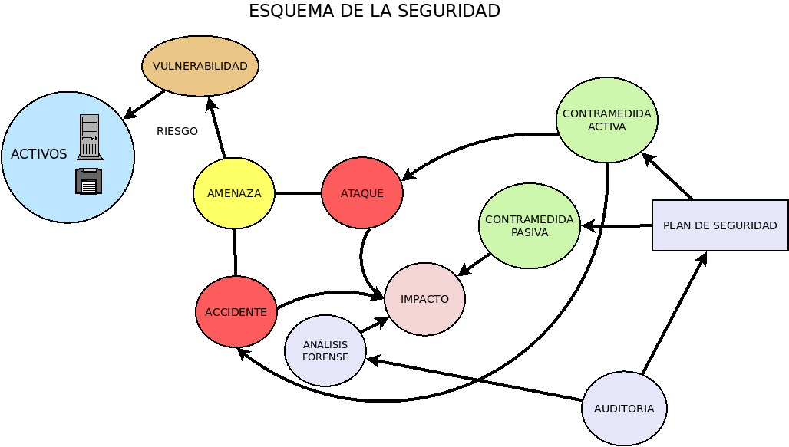
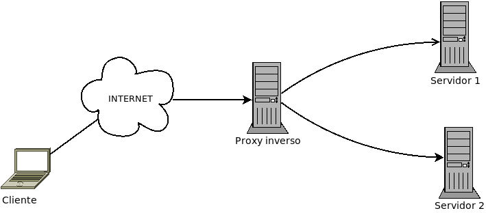
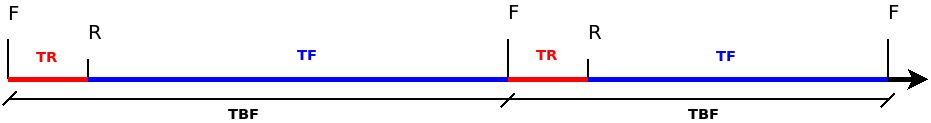

1. Seguridad en sistemas informáticos¶
Con el paso de los años, el tratamiento de la información se ha ido automatizando y, en consecuencia, la importancia y cantidad de los datos que manejan los sistemas informáticos ha ido aumentando. Esto ha atraído el interés de acceder fraudulentamente lo que ha supuesto el aumento de los ataques.
Paralelamente a los ataques, la seguridad de estos sistemas ha ido aumentando y la importancia que ha cobrado esta también. En la actualidad, la seguridad de los sistemas, sobre todos los conectados a redes, no se parece absolutamente en nada a aquella que existía en los años 70 cuando el tráfico en internet se limitaba a un puñado de hackers conectados desde las principales universidades de los EE.UU.
La presente unidad es meramente introductoria: presenta conceptos e ideas propias de la seguridad y cita técnicas que se estudiarán con moderada profundidad en unidades posteriores.
1.1. Conceptos¶
Antes de entrar en harina es conveniente definir:
- Seguridad informática
Son las medidas y controles que aseguran la confidencialidad, integridad, fiabilidad y disponibilidad de todos los activos del sistema de información.
de cuya definición, a su vez, deriva la necesidad de definir estos otros conceptos:
- Activo
Componente del sistema informático cuyo deterioro supone un coste o un agravio. Puede ser tanto hardware, como software como datos.
- Confidencialidad
Es la característica que reúnen los datos sobre los que se garantiza únicamente acceso al personal autorizado para su consulta.
- Integridad
Es la característica que reúne aquel activo que conserva su corrección y complitud. En consecuencia, procurar la integridad de un componente hardware implica que un mal uso o un mal mantenimiento del mismo no provoque su rotura o su mal funcionamiento; y lo propio sobre un dato, que éste no se pierda o sea modificado por alguien no autorizado.
- Fiabilidad y Disponibilidad
para cuya definición y estudio dedicaremos un epígrafe entero.
En la seguridad informática participan una serie de agentes, sucesos y actividades que podemos resumir en el siguiente cuadro:
aunque su completa compresión exige que introduzcamos también sus definiciones, que dividiremos en dos grandes grupos: las relacionadas con el daño y las relacionadas con la reparación. En cualquier caso, pese a todo el esfuerzo que se dedique a la seguridad, es indispensable tener presente que la seguridad absoluta no existe. De hecho, es célebre al respecto la frase del experto en seguridad y profesor universitario Gene Spafford:
El único sistema verdaderamente seguro es aquel que esté apagado, enterrado en un bloque de hormigón, sellado en una habitación revestida de plomo y protegido con vigilantes armados… y aun así tengo mis dudas
1.1.1. Daño¶
De la parte del daño, podemos hacer las siguientes definiciones:
- Daño
Es el efecto indeseado que ocasiona al sistema informático un determinado suceso perjudicial. Según sea la naturaleza del efecto, se distingue los siguientes tipos de daños:
De intercepción: aquel que deriva en el acceso de terceros no autorizados a los datos del sistema (p.e. la consecuencia de la intercepción de una comunicación o del robo de credenciales).
De interrupción: aquel que deriva en un cese temporal del servicio del sistema informático (por ejemplo, como consecuencia de la rotura de algún componente, la pérdida de datos o el colapso de alguna aplicación).
De modificación: aquel que deriva en la alteración fraudulenta de los datos almacenados o transmitidos, o en la alteración en el comportamiento de los programas.
De fabricación: aquel que deriva en la creación de datos espurios que son almacenados (p.e. en una base de datos) o transmitidos (p.e. a través del correo electrónico).
Ver también
Una explicación más detallada de estos tipos, pero aplicada al caso particular de la seguridad en redes, puede leerse en este epígrafe dedicado a los tipos de ataques en redes.
- Amenaza
Es un suceso o acción cuya consecuencia o propósito, de llevarse a cabo, provoca daño al sistema. Dependiendo de la característica a la que atendamos pueden ser:
Externa o interna, si atendemos al lugar de procedencia del agente causante.
Fortuita o intencionada, si atendemos a su intencionalidad.
Físicas o lógicas, si atendemos al activo del sistema al que afectan. Las físicas afectan al hardware; mientras que las lógicas, al software y datos.
- Ataque
Es la materialización de una amenaza no fortuita, que persigue la consecución de un daño.
- Accidente
Es la materialización de una amenaza fortuita que provoca un daño.
- Vulnerabilidad
Es el grado de exposición del sistema a las amenazas. Las vulnerabilidades pueden presentarse:
En el hardware (p.e. acceso indiscriminado al servidor).
En el software (p.e. un bug).
En los datos (p.e. no firmar los mensajes).
- Riesgo
Es el grado de exposición a una amenaza, descontadas las contramedidas que se hayan tomado para evitarlas.
- Atacante
Es el agente que consuma o intenta consumar la amenaza que explota cierta vulnerabilidad. Puede ser tanto interno como externo a la organización. Referidos a los atacantes hay una serie de términos comunes:
Hacker es un experto en asuntos informáticos, use como use sus conocimientos. Dennis Ritchie o Richard Stallman entran dentro de esta definición.
Cracker es la persona que vulnera la seguridad de un sistema informática de forma ilícita. El nombre deriva de la fusión de las palabras criminal hacker. Si lo hiciera, en cambio, para poner a prueba el sistema e informar al propietario, deberíamos referirnos a él como hacker de sombrero blanco.
Lamer es la persona con escasos conocimientos técnicos (pero generalmente una excelente opinión de sí mismo) que presume ante los demás a pesar de sus carencias. Es muy común en el ámbito de la seguridad y, por lo general, intenta atacar sistemas aplicando recetas basadas en herramientas prefabricadas cuyo funcionamiento apenas entiende.
- Impacto
Es el grado de daño que produce un ataque consumado con éxito parcial o total.
1.1.2. Defensa¶
Y de la parte de la defensa:
- Contramedida
Es la acción encaminada o bien a detectar o prevenir la amenaza que aprovecha cierta vulnerabilidad, o bien a corregir o paliar el daño provocado por un ataque o un accidente. Son, pues, de cuatro tipos:
Detectivas.
Preventivas.
Paliativas.
Correctivas.
- Análisis forense
Referido a la seguridad, es el conjunto de acciones destinadas a extraer información de los dispositivos de almacenamiento, sin alterar su estado a fin de conocer las causas por las que se ha producido un accidente o las vulnerabilidades que ha explotado o intentado explotar un ataque.
- Política de seguridad
Es el documento que recoge todas las directivas y objetivos que con respecto a la seguridad se propone una empresa u organización y establece los procedimientos y políticas para conseguirla. Se compone de:
Análisis de riesgos.
Plan de seguridad.
Aplicación del propio plan.
Auditoría.
- Análisis de riesgos
Es el análisis de todas las vulnerabilidades y amenazas de todos los activos del sistema y la valoración del impacto de cada posible daño.
- Plan de seguridad o plan de contingencias
Es el conjunto de todas las contramedidas implementadas sobre un sistema y se compone de tres partes:
Plan de respaldo, compuesto por todas las contramedidas preventivas (por tanto, seguridad activa).
Plan de emergencia, compuesto por todas las medidas paliativas aplicadas durante el daño o inmediatamente tras éste.
Plan de recuperación, compuesto por todas las medidas correctivas que intentan volver a la situación anterior al daño.
- Auditoría
Es la revisión pormenorizada del sistema en la que se buscan vulnerabilidades no conocidas y defectos en la aplicación del plan de seguridad. Como consecuencia, sirven como verificación de dicho plan y radiografían cuál es el estado en la seguridad.
Un informe de auditoría recoge:
La descripción de los activos, las vulnerabilidades y las contramedidas definidas.
Una relación de vulnerabilidades y amenazas detectadas.
La verificación del plan de seguridad.
Una propuesta de mejora que incluya contramedidas adicionales.
1.2. Objetivos¶
La seguridad en los sistemas de información se encamina a conseguir los siguientes objetivos:
Confidencialidad, que consiste en prevenir que individuos no autorizados accedan a la información almacenada, transmitida o tratada por el sistema informático.
Integridad, que consiste en garantizar que los datos, ya sea almacenados o transmitidos, no se vean alterados fortuitamente o fraudulentamente por un tercero ajeno al creador.
Disponibilidad, que consiste en garantizar en todo momento el acceso sobre el sistema y sus datos a las personas autorizadas.
Autenticidad, esto es, conocer fehacientemente quién se encuentra en el otro extremo. Este objetivo, junto al de la integridad, facilitan el no repudio, esto es, garantizar que el emisor de un mensaje no pueda negar que lo envió (repudio en origen), así como que el receptor no pueda negar que lo recibió (repudio en destino).
Auditabilidad o trazabilidad, que es la posibilidad de un sistema para ser analizado posteriormente mediante el registro de su comportamiento.
1.3. Clasificación¶
Dependiendo del criterio que usemos podemos establecer dos clasificaciones diferentes para la seguridad:
Según sea el recurso que protege, puede ser física o lógica.
Según sea el momento en que se aplica, puede ser activa o pasiva.
1.3.1. Según su objeto¶
Dado que en un sistema informático hay hardware, componente físico, software, componente lógico; y datos, de naturaleza lógica también; la seguridad puede ir encaminada a proteger un recurso físico o un recurso lógico.
1.3.1.1. Seguridad física¶
Es, como ya se ha definido, la seguridad encaminada a proteger los componentes físicos del sistema informático. A grandes rasgos podemos identificar las siguientes amenazas físicas:
Naturaleza |
Amenaza |
Contramedida |
|---|---|---|
Fortuita |
Catástrofe natural |
Copia remota. Ubicación. |
Accidente |
Mantenimiento. Protección. Ubicación. |
|
Fallo de suministro |
SAI, Regleta. |
|
Rotura |
Copia, Redundancia |
|
Provocada |
Robo |
Control físico del acceso |
Sabotaje |
La tabla representa amenazas físicas que pueden derivar en un problema de seguridad física o lógica. Por ejemplo, un problema en el suministro eléctrico (una sobretensión, por ejemplo), puede provocar la rotura de un componente físico (seguridad física); pero otro fallo eléctrico como un apagón puede derivar en la pérdida de datos (seguridad lógica). Es por ello que en las contramedidas se citan en ocasiones soluciones típicas de la seguridad física (como una regleta protectora), en ocasiones soluciones de seguridad lógica (copia de datos), y en ocasiones de ambas (SAI o control físico del acceso).
Centrándonos en las medidas propias de la seguridad física:
El SAI como herramienta para evitar la inutilización de componentes físicos, se tratará en la última sección del tema.
Para los accidentes fortuitos, es siempre conveniente:
Un adecuado mantenimiento del lugar donde se dispone el sistema informático. Una gotera, por ejemplo, puede provocar que el agua se cuele en el recinto y que malogre el hardware. Otro ejemplo, puede ser que un inapropiado mantenimiento de la red eléctrica derive en un cortocircuito que provoque un incendio.
Habilitar medidas de protección que minimicen el accidente. Por ejemplo, disponer detectores de incendios, colocar extintores, o usar material ignífugo para dificultar la extensión del fuego.
Evitar situar el sistema informático en un lugar con más probabilidades de sufrir accidentes (o catástrofes naturales). Por ejemplo, si situamos nuestras oficinas colindantes con un negocio donde se trabaje con materiales explosivos e inflamables, tenemos más papeletas para acabar sufriendo un incendio.
El control físico del acceso salvaguarda a nuestros equipos de su robo o de su sabotaje[1]:
Puertas con cerradura.
Controles biométricos.
Vigilantes jurados.
1.3.1.2. Seguridad lógica¶
Por su parte, la seguridad lógica se encamina a proteger los componentes lógicos y los datos.
Amenaza |
Contramedidas |
|---|---|
Robo de datos |
|
Pérdida de datos |
|
Corrupción de datos |
|
Alteración del software |
|
La tabla, en especial las contramedidas propuestas, requiere cierta explicación.
El robo de datos puede producirse por dos vías:
Por el acceso físico al hardware y el robo del soporte de almacenamiento. En este caso, sería aplicable lo explicado bajo el epígrafe anterior.
Por el acceso lógico a través de la red, en cuyo caso habría que aplicar contramedidas de control como:
Política de contraseñas.
Permisos.
Software de contención: cortafuegos, proxies, antivirus, etc.
En cualquier caso, consumado el robo hay un modo de que la información no pueda ser leída por el ladrón: haber almacenado cifrados los datos.
La pérdida de datos puede paliarse aplicando distintas contramedidas dependiendo de cuál sea la causa que origina la pérdida:
Contra pérdidas por la rotura del dispositivo de almacenamiento, puede habilitarse medidas que protejan al dispositivo (p.e. ante un apagón, disponer un SAI), redundancia en los discos (RAID) o copias de seguridad.
Contra pérdidas por borrado accidental, la contramedida adecuada es disponer copias de seguridad.
La corrupción de los datos puede derivar en pérdida (una corrupción fortuita) o en obtener información errónea (en especial, si la corrupción ha sido intencionada porque el atacante ha modificado la información inicial). Para la primera corrupción, debe procurarse proteger el sistema de almacenamiento de fallos de suministro (p.e. mediante SAI) y utilizar sistemas de ficheros tolerantes a fallos, que se recuperan ante un fallo inesperado. Ante una corrupción intencionada de los datos, existen mecanismos para conocer que esa corrupción se ha producido como la firma digital que incorpora técnicas de hash.
Ver también
Para conocer en profundidad las técnicas de cifrado y firma digital hay una unidad íntegra dedicada a la criptografía.
La alteración del software puede deberse:
Una alteración manual llevada a cabo por alguien que ha accedido al sistema. Por ejemplo, si logra permisos de administrador, puede sustituir un programa por otro con el mismo nombre.
Una alteración provocada por algún software especializado (virus, troyano, etc)
Otro aspecto a destacar en la seguridad son las herramientas que se usan para amenazarla:
- Herramientas de diagnóstico
Son herramientas que sirven para encontrar vulnerabilidades, como un escaneador de puertos. No son programas maliciosos en sí, y de hecho están pensados para usarse en el diagnóstico de la seguridad.
- Puertas traseras (backdoors)
Son agujeros que incluye el propio programador en su programa y que permiten obtener acceso ilícito al mismo.
- Software malicioso
Nombre genérico que engloba todo software diseñado con propósitos espurios. También es conocido por el anglicismo malware.
1.3.2. Según su momento de aplicación¶
Una contramedida puede actuar en el momento en que se produce la amenaza o después de esta.
1.3.2.1. Seguridad activa¶
Las técnicas de seguridad activa se desencadenan en el momento en que se produce la amenaza con el objeto de detectarla o prevenirla. De este modo, son medidas de seguridad activa:
Todas las medidas de control de acceso encaminadas a salvaguardar software, datos y hardware:
Autenticación.
Políticas de permisos.
Control físico: biométricos, etc.
Software de defensa:
Cortafuegos.
Antivirus.
De detección de intrusos.
Sistemas de ficheros tolerantes a fallos.
Firma digital que evita que la información firmada pueda adulterarse[2].
Cifrado que evita la lectura o modificación de la información.
Nota
Es obvio que, si consideramos la amenaza como el robo en sí, cifrar no evita que ésta se consuma, sino los efectos del robo y, por tanto, sería una contramedida de seguridad pasiva,
Sistemas de protección ante fallos y accidentes:
SAI (online o interactivo) que previene las consecuencias nocivas sobre el hardware de picos y bajadas de tensión.
Sistemas de protección física.
1.3.2.2. Seguridad pasiva¶
Las técnicas de seguridad pasiva se establecen para corregir o paliar los efectos negativos que haya producido una amenaza.
SAI ante cortes de suministro eléctrico que mantienen activo el sistema, al menos por un tiempo, y cuando estén a punto de agotarse son capaces de hacer que el sistema se apague ordenadamente.
La redundancia que permite mantener el servicio ante la pérdida de uno de los componentes redundantes. Por ejemplo, en sistemas con discos redundantes (RAID), la ruptura de un disco no supone ni la pérdida de información ni el cese del servicio. Pero la redundancia no sólo puede llevarse a cabo en el almacenamiento. También puede ser redundante un servicio de correo y cuando caiga el servidor prioritario de correo (fallo en la red o en hardware del servidor), seguir admitiendo mensajes uno alternativo.
Las copias de seguridad de los datos para recuperar datos perdidos por la ruptura de un dispositivo de almacenamiento.
1.4. Fiabilidad y disponibilidad¶
Ambos son conceptos íntimamente ligados que trataremos someramente bajo este epígrafe. La fiabilidad es el grado de garantía que proporciona un sistema informático de ofrecer su servicio a los usuarios autorizados. La disponibilidad, por su parte, es la medida del tiempo que un sistema ofrece servicio a los usuarios autorizados. Lo ideal es que fiabilidad y disponibilidad fueran absolutas, pero en la práctica es inevitable que se produzca interrupciones, que pueden tener dos naturalezas:
Previstas, producidas por cambios planificados en el software o el hardware.
Imprevistas, producidas por contingencias diversas: un fallo en el suministro eléctrico, un ataque, la rotura de algún componente físico, etc.
Tres son los factores que influyen en la disponibilidad:
La tolerancia al fallo, esto es, la capacidad de seguir funcionando aunque se haya producido algún fallo en el sistema.
La escalabilidad, esto es, la capacidad para acomodarse a la variabilidad en la demanda del servicio, de manera que se puedan absorber picos en su demanda.
La recuperabilidad, esto es, la capacidad para restaurar rápidamente el servicio sin sufrir pérdidas de datos, después de que algún fallo lo haya interrumpido.
1.4.1. Técnicas¶
Técnicas para mejorar la disponibilidad son:
Cualquier técnica de seguridad activa que evite una amenaza que suponga una interrupción. Por ejemplo, un control físico del acceso que impida que se lleve a cabo un sabotaje; o labores de mantenimiento que ayuden a preservar la integridad del hardware.
SAI que mantenga el suministro eléctrico en caso de apagón. Si este no es muy prolongado y las baterías del SAI gozan de suficiente autonomía, el hardware nunca llegará a sufrir las consecuencias del percance y el servicio no sufrirá interrupciones.
La redundancia en el sistema que posibilita la continuación del servicio, cuando una de las partes redundantes falla. Pueden proporcionar redundancia:
RAID para la redundancia en el almacenamiento.
Proxies que redirijan las conexiones hacia servidores redundantes:

1.4.2. Medida¶
Matemáticamente podemos medir la disponibilidad como la relación entre el tiempo en que se encuentra disponible el servicio y el tiempo total. Por ejemplo, si a lo largo de un año, el servidor se ha encontrado fuera de línea la mitad del tiempo, su disponibilidad habrá sido de un –inaceptable– 50%. A esto respecto los proveedores de servicios deben indicar siempre entre las características del mismo el llamado SLA («Acuerdo de nivel de servicio» en castellano) que es la disponibilidad mínima que se comprometen a ofrecer para el servicio.
En alta disponibilidad, el SLA ideal es el definido por la regla de los cinco nueves que consiste en estar disponible el 99,999% del tiempo, o lo que es lo mismo, sólo será inaccesible algo más de 5 minutos al año. Este es un nivel muy exigente que muy pocos logran alcanzar. Amazon, por ejemplo, sólo se compromete a una disponibilidad del 99,95%. Otras reglas de referencia son la regla de los tres nueves (99,9%) y la de los cuatro nueves 99,99%.
En cualquier caso, para el cálculo la disponibilidad es preciso primero estudiar la fiabilidad a través de varios conceptos:
Símbolo |
Descripción |
|---|---|
TBF |
Tiempo entre fallos consecutivos |
TR |
Tiempo de reparación del fallo |
TF |
Tiempo de funcionamiento entre fallos consecutivos |
N |
Número de fallos en la unidad de tiempo (1 año) |
los cuales podemos representar gráficamente así:
A partir de estas medias podemos definir distintas métricas:
Los totales de las anteriores:
\[ \begin{align}\begin{aligned}\mathit{TTR} = \sum_i {\mathit{TR_i}}\\\mathit{TTF} = \sum_i {\mathit{TF_i}}\\\text {(Tiempo total)} \;\; \mathit{TTBF} = TT = \sum_i {\mathit{TBF_i}}\end{aligned}\end{align} \]Los tiempos medios se calculan como:
\[ \begin{align}\begin{aligned}\mathit{MTTR} = \dfrac{TTR}{N}\\\mathit{MTTF} = \dfrac{TTF}{N}\\\mathit{MTBF} = \dfrac{TT}{N}\end{aligned}\end{align} \]
Y la propia disponibilidad tal y como la hemos definido. En consecuencia:
Ejemplo
Calcular los tiempos medios de reparación, de funcionamiento y entre fallos, y la disponibilidad de un servidor que en el último año ha fallado diez veces, de las cuales se ha subsanado 3 veces en cinco minutos el error, cinco veces en diez minutos y dos veces en una hora.
Los tiempos medios son:
Y la disponibilidad:
1.4.3. Ejercicios sobre disponibilidad¶
Un servicio web ha sufrido las siguientes interrupciones en el curso de un año:
Seis cortes eléctricos, cada uno de los cuales se subsanó en 5 minutos.
Dos caídas de la conexión a internet que duraron, respectivamente, 40 minutos y 20 minutos.
Un cambio de uno de los discos del RAID que se llevó a cabo en 15 minutos.
Nota
El hardware actual impide cambiar en caliente los discos.
Dos actualizaciones del kernel del sistema operativo, que obligaron a reiniciar el servidor y se demoraron tres minutos cada una.
Un pico de tensión que quemó un switch intermedio en la red local y cuya sustitución se demoró nueve minutos.
Se pide:
Calcular TTR (tiempo total de reparación), TTF (tiempo total de funcionamiento) y MTBF (tiempo medio entre fallos).
La disponibilidad del sistema.
Explique qué contramedidas utilizaría para evitar cada una de esas interrupciones. Además de citarlas, indique si son seguridad activa o pasiva.
¿Cuáles de esas contramedidas podría llevar a cabo para cumplir con la regla de los cuatro nueves?
Notas al pie